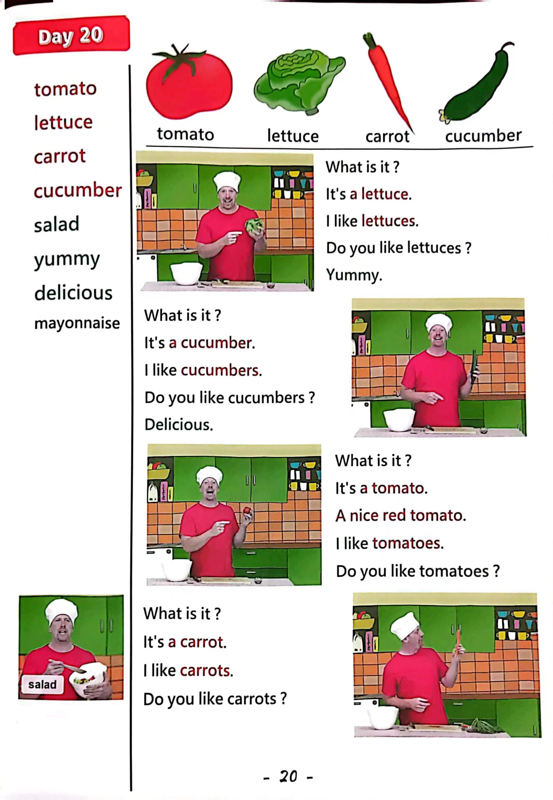

Day 20
Unit 6 · story
教材重点
教材重点依据网盘文件“第三级红色每日打卡全.pdf”，PDF 第 22 页对应 Day 20；以原图为准，避免对图片文字做不可靠的自动识别。
网盘教材重点原图 · PDF 第 22 页对应 Day 20

Unit 6 · story · 5–6岁
like · hello · please · look
Hello, hello, hello, hello, everyone. Hello. Hello.
台词本为机器转写，可能存在识别误差；不等同于视频逐字原声。
详细内容
Part 1 核心词汇
必须掌握 · 4 个Part 2 跟读句型与句型拓展
左侧保留台词本原句，右侧为替换练习；拓展内容不是视频逐字台词。
Hello, hello, hello, hello, everyone. Hello. Hello.
Everyone, hello. Hello.
Everyone say, hello. Everyone.
Tomato lettuce.
Carrot and cucumber, yummy, yummy, yummy. Hello. Hi.
Part 3 台词本全文
来源：第3级台词本 · 020.Wow!Red - Unit 6 'fruit' - part 2 story_6_2.pdf。以下保留网盘 PDF 的机器转写文本，仅清理了文件路径页眉和空行。
Hello, hello, hello, hello, everyone. Hello. Hello.
Everyone, hello. Hello.
Everyone say, hello. Everyone.
Tomato lettuce.
Carrot and cucumber, yummy, yummy, yummy. Hello. Hi.
I'm hungry, so I'm making.
A solid, oh, look.
What's this What is it? Yeah, it's a lettuce, oh, I like lettuce. Yeah.
Do you like lettuce? Yeah, okay, and say with me.
I like lettuce, come on, I like lettuce, yeah, I like lettuce, come on, I like lettuce.
Oh, delicious.
Great, but hmm, just lettuce. No, I need something more.
Who I know, cucumber. I like Cucumber.
Oh, maggie, maggie, can you get me a cucumber please, hello, hey, what does Steve want.
A cucumber, OK, I'll break it up.
Hey, thanks, maggie, oh, look, what is it.
Yeah, it's a cucumber, oh, yummy. I like cucumbers.
Do you like cucumbers? Yeah, okay, say with me, I like cucumbers. I like cucumbers.
I like cucumbers come on, I like cucumbers delicious. Let's chop it up and put it.
In the salad. Yea.
Great, oh, I like cucumber, let's put it in the salad.
Delicious, yummy, yummy.
Hmm, but it still needs something more. Hmm. Oh, I know what about.
Tomatoes here, a nice red tomato. Oh, maggie,
Maggie, what can you get me some tomatoes please what does Steve want Now?
A tomato, he, well, watch this.
Hey, look, what is it? Yeah, it's a.
Tomato, no, it isn't.
It's an.
Apple, oh, I want a tomato. Oh, maggie.
/
-
/3/020.Wow!Red - Unit 6 'fruit' - part 2 story_6_2.txt[2022/3/29
星期二
6:47:16]
Can you please give me a nice juicy red tomato Please.
Oh thank you. Hey, look, what is it.
Yeah, it's a tomato.
I like tomatoes. Do you like tomatoes here and say with me, I like tomatoes?
I like tomatoes.
I like tomatoes, come on, I like tomatoes delicious. Let's chop it up and put it.
In my salad, delicious, yummy, yummy, yummy.
Okay, let's finish with one more ingredient. How about, oh, some carrots, yeah, oh, maggie,
Maggie, can I have some carrots please? No, I'm busy.
Oh please, maggie, please, I want some carrots for my salad, please, okay?
A broken.
Maggie, maggie, no, stop being so naughty.
Please give me some carrots.
Carrots.
But I don't need so many. Just one is enough, hey, so look what is it.
Yeah, it's a carrot. Oh, I like carrots.
Do you like carrots here and say with me, I like carrots.
I like carrots.
I like carrots, come on, I like carrots, let's chop it up and put it in the salad. Oh great.
I like carrots, yam, yam. Now let's mix everything together.
The lettuce, the cucumber, the tomato and the carrot hold delicious. Let's try.
Hmm, it's okay, but it needs some mayonnaise. Hmm.
Yeah, maggie, can I have some mayonnaise please go, steve, I'm busy.
Oh, maggie, please, I want some mayonnaise. No, steve, not now.
Maggie, I want some mayonnaise for my salad. Oh,
Maggie, where's mine Mayonnaise.
Look up.
Are you naughty, naughty bird? Oh,
Oh, well, bye bye, boys and girls, see you next time, bye bye, oh, maggie.
There.